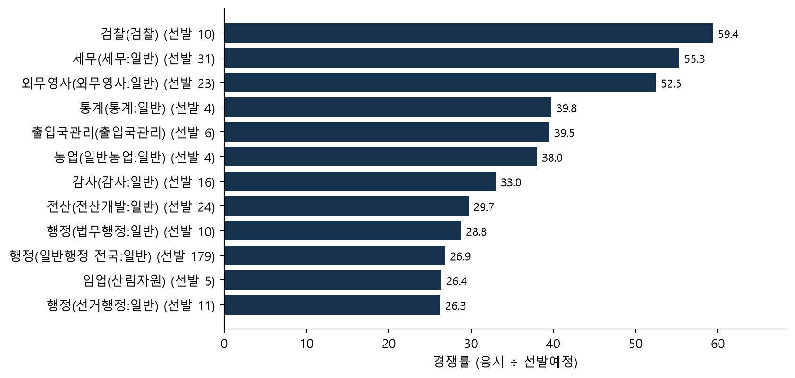

인사혁신처가 공개한 2026년 7급 공채 1차 필기 응시현황(PDF)에서 표를 꺼내, 선발예정 668명에 대한 경쟁 규모를 정리했다. 응시대상 25,437명 가운데 15,534명이 응시해 결시율은 38.9%였다. 응시 기준 전체 경쟁률은 23.3:1이다. 경쟁률의 분모, ‘-’ 칸 해석, 구분모집 처리 같은 판단은 사람이 내렸고 판단 기록에 근거를 남겼다.
1 연구 질문
2026년 7급 공채 1차 필기의 직군별·모집단위별 경쟁 규모는 어떠한가
경쟁률을 계산하는 방식에 따라 무엇이 달라지는가
2 자료와 방법
출처: 공공데이터포털 「인사혁신처_국가공무원 7급 공채 1차 필기시험 응시현황 통계_20260803」 (PDF)
수집: pipeline.py fetch → PDF 표 추출 → data.csv. 원문 표기와 ’-’는 그대로 보존
best = ranked.sort_values("ratio", ascending=False).head(12).iloc[::-1]fig, ax = plt.subplots(figsize=(8, 4.6))ax.barh([f"{u} (선발 {p:.0f})"for u, p inzip(best["unit"], best["planned"])], best["ratio"], color="#17324d")for i, value inenumerate(best["ratio"]): ax.annotate(f"{value:.1f}", (value, i), textcoords="offset points", xytext=(4, -4), fontsize=9)ax.set_xlim(0, best["ratio"].max() *1.15)ax.set_xlabel(f"경쟁률 ({base_word} ÷ 선발예정)")ax.spines[["top", "right"]].set_visible(False)plt.show()
그림 1: 모집단위별 경쟁률 상위 12 (선발 1–2명 단위는 판단 기록에 따름)

코드
if pick["'경쟁이 가장 센 직렬'"] =="쓴다":print(f"{base_word} 기준으로 경쟁률이 가장 높은 모집단위는 {top['unit']}({top['ratio']:.1f}:1)였다.")else:print("어느 직렬의 경쟁이 '가장 세다'는 문장은 쓰지 않았다. 분모와 선발 규모에 따라 순위가 바뀌기 때문이다.")
어느 직렬의 경쟁이 ’가장 세다’는 문장은 쓰지 않았다. 분모와 선발 규모에 따라 순위가 바뀌기 때문이다.